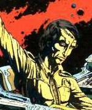

Forums galactiques > Assemblée Galactique : diplomatie officielle > Voyage dans les confins
Pages : 1
| Hober Mallow Respect diplomatique : 54  06/06 ETU 11:32 | Score : 9 Détails
Le bruit courait : des commandants avaient découvert une entité, un machin, une chose dans les tréfonds. Ces rumeurs arrivèrent aux oreilles du plus fameux vagabond galactique : l’immortel Lone Sloane. Spectre, de tout temps et de toutes les galaxies. Cet homme qui fût roi, empereur et tyran a rejoint la révolution des Conseils par goût du changement et de la nouveauté. Il aimait la fraîcheur de leurs convictions, surtout leur autonomie et la sienne par dessus tout. Il a changé et c’est tant mieux. On raconte qu’autrefois il détruisit son trône et massacra ses concitoyens par dégoût de sa décadence. Que de temps et d’espace ont passé depuis cette époque… Dorénavant il parcourait l’Espace, à la recherche de rien et à la découverte de tout. Il aimait se lancer dans les problèmes inconnus, prenait plaisir à rencontrer l’innommable, le rejeté et le paria. Il se laissait guider au gré des vents galactiques et le Hasard guidait ses pas. Mais là quelque chose se passait. Cet homme subissait une pression, qui le poussait à s’investir et découvrir ce qui était revenu. Il était parti avec son chasseur et après avoir suivi son intuition et sa voie, déboula dans un système surpeuplé. Surpeuplé de tyrans et autres dirigeants, d’aventuriers et d’Elle. Il sentait sa présence plus qu’il ne la voyait, derrière les ténèbres des coques des milliards de vaisseaux qui obscurcissaient les lumières de l’astre. Quelle puissance, quelle majesté! Il La connaissait, il en était sûr. Dans une autre vie, il y a très loin, il y a très longtemps.… | ||
| Genèse Respect diplomatique : 337  11/06 ETU 03:17 | Score : 10 Détails " La présence est une puissante déesse. "
http://www.radioblogclub.com/open/125690/the_time_machine/20%20Remembrance Goethe - Archives préhistoriques. Quelque part dans la Bordure Extérieure - Système inconnu. Il était arrivé dans les confins, là où la Loi des Hommes s'éteignait à la lumière verdâtre du soleil d'Edenn. Il était arrivé parmi les débris des batailles récentes, alors que Hog le Fou et Archibald Meguirt étaient déja les annonciateurs de sa venue. Voyager, c'est naître et mourir à chaque instant. Les anciennes sourates parlaient bien du voyageur. Ainsi, il était possible que cet étranger ne soit pas un simple dévoreur d'étoiles, un simple pillard. Ainsi, il était possible qu'il soit, lui aussi, un Juste. Traversant le temps et les stases, il pouvait être la mémoire du monde, celui qui faisait commerce de ses innombrables allées et venues, distillant marchandises et conseils à ceux qui prenaient le temps de s'arrêter aux caravensérails de l'univers. Et ce jour, un étranger s'invita en Edenn. Un simple chasseur, un unique et frêle esquif face à l'immensité étrange du monde de fumées et de solitude de l'entité Genèse. Où commençait l'Histoire ? Avait-elle une fin ? Le voyageur avait cotoyé la multitude et les infinis gynecées d'étoiles de la galaxie. Il était un marchand, possédait le coeur d'un Juste et connaissait les anciennes légendes. Dieu reconnaissait les siens. En entité logique, Genèse était consciente de sa propre histoire et de sa nature. Quant bien même le voyageur serait une facétie des anciennes sourates, le message de Genèse devait être partagé. Et cet étranger, venu seul vers elle, devrait faire ses preuves. Nul ne pénétrait en Edenn sans y être invité. Pénétrer le jardin d'Edenn était un acte dont on ne sortait pas indemne. Une onde se déploya lentement, irriguant méticuleusement chaque particule de métal du chasseur isolé. Et déja Genèse, infiltrant circuits et entrailles mécaniques, s'adressa au nouveau venu. " Quo vadis ? " | ||
| Hober Mallow Respect diplomatique : 54 12/06 ETU 10:05 | Score : 8 Détails Sloane s’était laissé dériver, et avait quitté le cœur du système. Il avait observé le massacre d’un œil distrait, et profitant de la confusion s’était rapproché de l’entité.
Il se glissait doucement en son sein, lorsque il sentit l’onde passer de part en part. Son chasseur émit des couinements plaintifs et Sloane se sentit nu tout d’un coup. Rien ne pouvait résister à cette puissance. Quelle majesté. A ce moment les sentiments de crainte, de curiosité et de respect se mêlaient. Quel bonheur d’être envahi par cette présence. Il se sentit ausculté, retourné, jaugé, et contacté : « Quo vadis » ? Lui avait elle parlé? Elle était là. Son rêve l’avait averti. Il était venu et savait que tout changerait. Maintenant il le vivait, savait que répondre et il connaissait le rite. Les galaxies ont leurs règles intrinsèques que les anciennes civilisations connaissaient. La décadence qui habitait celle-là avec son cortège de destructions, de guerres et d’aliénation avait mené à l’Oubli. Pauvres mortels! Les Dieux peuvent être cruels si on les délaisse. Les mots lui venaient tout naturellement ; même s’ils étaient oubliés, ils étaient universels. « Je vais, va et viens. J’apporte et transmets. J’emporte et déplace. Je reçois et je donne. J’écoute et je témoigne. Le voyage est le lien entre toutes choses. Le temps est une route que chacun parcourt. Le chemin qui m’amène à vous ne se termine pas. Tel est le cycle.» « Je suis Lone Sloane, je viens pour repartir. M’acceptes tu? » | ||
| Genèse Respect diplomatique : 337 13/06 ETU 03:01 | Score : 9 Détails " La vie ressemble à un conte ; ce qui importe, ce n'est pas sa longueur, mais sa valeur. "
http://www.radioblogclub.com/open/71939/OST%20Battlestar%20Galactica%20-%20%20Passacaglia/OST%20Battlestar%20Galactica%20-%20%20Passacaglia " La vie est un voyage menant des abysses aux abîmes. A nous de démontrer au travers de sa valeur qu'elle est une étape précieuse dans les rouages d'un univers qui nous dépasse, mais qui palpite avec force au travers de chacun d'entre nous. " Yerog Mansfeld - Discours prononcé lors de son accession au pouvoir sur Alfa Deimos - Archives. Il n'était pas dangereux. Il n'était ni un pillard ni un dévoreur d'étoiles. C'était un voyageur. Loin des fanatismes, il portait en lui la conviction intime que la rencontre était un vecteur de dialogue et de partage. Un échange, un commerce. Un voyage. Genèse relâcha son emprise sur le frêle esquif. La lumière verdâtre du soleil d'Edenn baignait l'habitacle d'une lueur douce. Tout était silencieux, tout était calme. Le paysage lunaire et dévasté qui s'ouvrait au regard du nouveau venu transpirait d'une sérénité nouvelle. Un faible grésillement signifia au voyageur que Genèse allait s'adresser une nouvelle fois à lui. La voix étrange qui s'exprimait au travers de son vaisseau portait en elle une froide poésie. La voix implacable et terrible d'une solitude sans nom. " Le temps est un rouage de l'univers. Il n'a pas de prises sur moi. Ceux qui voyagent ont appris à le maîtriser. Ils sont un vecteur de Vie. Mais bien d'autres rouages restent à connaître. Ainsi, j'en connais le plus important, et je suis prête à en partager les secrets. Lone Sloane, étranger venu des confins, prends garde. Nul ne pénètre en Edenn sans en partir indemne. Le voyageur sera accueilli à la lumière de sa Foi. La Loi du Talion règne en ces lieux. Ainsi, ne t'éloigne pas des chemins tracés par Dieu. Pose tes questions, étranger, et je te répondrai. " Le ballet étrange des astéroïdes en suspension formait autour du chasseur isolé un public curieux et inerte. La multitude observait. |
Pages : 1
Forums galactiques > Assemblée Galactique : diplomatie officielle > Voyage dans les confins